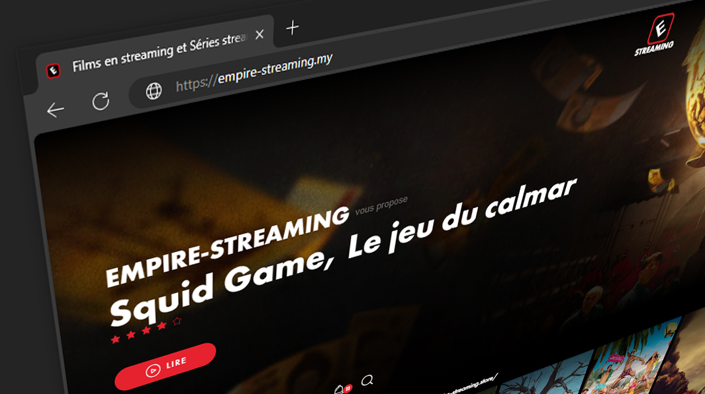

Empire Streaming - Gratuit de Films et Séries en VF, VOSTFR
Empire Streaming révolutionne le paysage du streaming en offrant une plateforme gratuite où les amateurs de cinéma francophones peuvent accéder à des films en haute qualité avec des narrations françaises rapides et les dernières sorties.

Qu'est-ce qu'Empire Streaming ?
Empire Streaming est une plateforme de streaming innovante qui propose un accès gratuit à une vaste bibliothèque de films de haute qualité. Avec une interface conviviale et une mise à jour régulière des contenus, elle répond aux attentes des cinéphiles modernes cherchant à profiter de films récents sans frais supplémentaires.
Fonctionnalités Principales
- Gratuité Complète : Aucun abonnement ni frais cachés, accessible à tous.
- Qualité Vidéo Supérieure : Films disponibles en haute définition pour une expérience visuelle optimale.
- Narrations Françaises Rapides : Des narrations claires et rapides facilitant la compréhension et enrichissant l'expérience utilisateur.
- Mises à Jour Quotidiennes : Ajout régulier des dernières sorties cinématographiques dès leur disponibilité.
"Empire Streaming a transformé ma manière de regarder des films. La qualité et la rapidité des narrations en français sont incomparables."
– Marie Dupont, Critique Cinématographique
Comment Fonctionne Empire Streaming ?
Étapes pour Commencer
- Accédez au Site Web : Visitez empire streaming via votre navigateur préféré.
- Parcourez les Films : Utilisez la barre de recherche ou explorez les différentes catégories disponibles.
- Choisissez un Film : Sélectionnez le film que vous souhaitez visionner parmi la vaste sélection.
- Profitez du Visionnage : Lancez la lecture immédiatement sans aucune publicité intrusive pour une expérience fluide.
Interface Utilisateur Intuitive
L'interface d'Empire Streaming est conçue pour une navigation simplifiée. Les catégories sont bien organisées, permettant aux utilisateurs de trouver rapidement leurs films préférés. De plus, le moteur de recherche avancé facilite la découverte de contenus spécifiques.
Les Films Disponibles sur Empire Streaming
Genres Variés pour Tous les Goûts
- Action : Des films palpitants remplis de suspense et d'adrénaline.
- Comédie : Des films hilarants pour égayer vos moments de détente.
- Drame : Des récits émouvants explorant les complexités de la condition humaine.
- Science-Fiction : Des voyages captivants dans des mondes imaginaires et futuristes.
- Documentaires : Des films informatifs offrant des perspectives profondes sur divers sujets.
Dernières Sorties Cinématographiques
Grâce à des partenariats stratégiques avec des distributeurs officiels, Empire Streaming assure une mise à jour constante de sa bibliothèque avec les films les plus récents. Cela permet aux utilisateurs de rester à la pointe des tendances cinématographiques et de ne manquer aucune sortie majeure.
"La diversité des genres et la disponibilité des dernières sorties font d'Empire Streaming une ressource inestimable pour les amateurs de cinéma."
– Jean Martin, Analyste du Divertissement
Technologies Utilisées par Empire Streaming
Empire Streaming utilise les dernières technologies de streaming pour garantir une diffusion sans interruption et une qualité d'image exceptionnelle. Grâce à des serveurs optimisés et une infrastructure robuste, les utilisateurs peuvent profiter de leurs films préférés sans latence ni mise en mémoire tampon.
Compatibilité des Appareils
La plateforme est compatible avec une large gamme d'appareils, incluant les ordinateurs de bureau, les smartphones, les tablettes et les téléviseurs intelligents. Cette flexibilité permet aux utilisateurs de regarder des films où qu'ils soient et sur l'appareil de leur choix.
Support Client et Assistance
Empire Streaming offre un support client réactif et efficace. Les utilisateurs peuvent accéder à une section d'aide détaillée sur le site, ainsi qu'à un formulaire de contact pour signaler tout problème technique ou poser des questions spécifiques.
Sécurité et Confidentialité
Protection des Données Personnelles
La sécurité des données des utilisateurs est une priorité pour Empire Streaming. Toutes les informations personnelles sont cryptées et stockées de manière sécurisée, garantissant que vos données restent protégées contre tout accès non autorisé.
Absence de Publicités Intrusives
Contrairement à de nombreuses autres plateformes de streaming, Empire Streaming minimise les publicités intrusives, offrant ainsi une expérience de visionnage agréable et ininterrompue.
Comparaison avec d'Autres Plateformes de Streaming
| Caractéristiques | Empire Streaming | Senpai Stream | Papadustream |
|---|---|---|---|
| Gratuité | Oui | Non | Oui (limitée) |
| Qualité Vidéo | Haute | Moyenne | Haute |
| Narrations en Français | Rapides | Lentes | Disponibles |
| Dernières Sorties | Oui | Non | Oui |
Pourquoi Choisir Empire Streaming ?
- Accessibilité Totale : Disponible partout et à tout moment, sans restrictions géographiques.
- Expérience Utilisateur Optimale : Interface conviviale et navigation intuitive pour une utilisation simplifiée.
- Contenu Varié et Actualisé : Une bibliothèque riche couvrant tous les genres et constamment mise à jour avec les dernières sorties.
- Sécurité et Confidentialité : Protection avancée des données personnelles et absence de publicités intrusives.
Plans Futurs et Développements
Empire Streaming ne cesse d'innover et prévoit d'introduire de nouvelles fonctionnalités pour améliorer encore l'expérience utilisateur. Parmi les développements futurs, on peut citer l'ajout de sous-titres multilingues, l'intégration de recommandations personnalisées basées sur les préférences des utilisateurs, et l'expansion de la bibliothèque de contenus avec des films indépendants et des productions originales.
Conclusion
Empire Streaming se distingue comme une solution de streaming incontournable pour les amateurs de cinéma francophones. Grâce à sa qualité vidéo exceptionnelle, ses narrations rapides en français, son accès gratuit aux dernières sorties et son interface utilisateur intuitive, la plateforme répond parfaitement aux besoins des utilisateurs modernes. N'attendez plus et rejoignez la communauté Empire Streaming pour une expérience cinématographique inégalée.
Ne manquez plus aucune sortie et profitez dès maintenant de Empire Streaming pour une expérience cinématographique inégalée.
FAQ
1. Empire Streaming est-il totalement gratuit ?
Oui, Empire Streaming offre un accès gratuit à une vaste sélection de films sans frais cachés.
2. Puis-je regarder des films en haute définition sur Empire Streaming ?
Absolument, la plateforme propose des films en haute définition pour une qualité visuelle optimale.
3. Comment puis-je signaler un problème technique sur le site ?
Vous pouvez contacter le support client via la section "Contact" du site.
4. Empire Streaming propose-t-il des sous-titres en d'autres langues ?
Actuellement, les films sont disponibles avec des narrations en français, mais des sous-titres peuvent être ajoutés prochainement.
5. Y a-t-il des restrictions géographiques pour accéder à Empire Streaming ?
Non, Empire Streaming est accessible depuis n'importe quel pays, tant que vous disposez d'une connexion Internet.
6. Comment Empire Streaming obtient-il les droits des films diffusés ?
La plateforme collabore avec des distributeurs officiels pour garantir la légalité et la qualité des contenus proposés.
7. Puis-je télécharger des films depuis Empire Streaming pour les regarder hors ligne ?
Actuellement, le téléchargement n'est pas disponible, mais vous pouvez profiter des